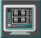

Operating Documentation
Direction 5133330-3, Rev# 14
Module Version 1.0, Version Date 5/3/07
Operating Documentation |
| ||||
| POISON HAZARD! | ||||
| THE PHANTOM CONTAINS NICKEL CHLORIDE, A SUSPECTED CARCINOGEN | ||||
| DO NOT INGEST. DISPOSE OF AS A HAZARDOUS WASTE ACCORDING TO STATE AND FEDERAL REGULATIONS. |
| Condition | Reference | Effectivity |
|---|---|---|
No image artifacts | - | - |
- | - |
At the operator workspace, select the scan icon in the desktop control panel.
If necessary, exit out of any previous exams by selecting [End Exam].
Click on [New Pt] and enter the following:
Id: geservice
Name: snr check
Weight (lb.): 111
Check the temperature indicator on the head SNR sphere. Be sure that the temperature is 22° C ± 2° before starting the procedure.
Position SNR sphere in the Head Loader as shown in Illustration 1. Fasten the strap to the top of Head Loader to secure the SNR sphere inside the loader. Position the Head Loader within the Quad Head Coil so the loader is centered and the loader's axial mark is at the back edge of the Head Coil window (see Illustration 2 for landmarking phantom).
LANDMARK, then MOVE TO SCAN. Allow the phantom solution to settle for 20 minutes before starting the scan.
At the operator workspace, prepare the system for an SNR Check (Head, Axial) scan using the scan protocol (o.13.4) shown in the "Service Protocols" procedure on the service methods CD-ROM.
Click on [Autoview], just below the Autoview image display screen, to automatically display your images.
Click on [Save Series], then [Prepare to Scan].
Click on [Auto Prescan]. After the prescan, check the R1 value. If R1 does not equal 11, check for the problems listed next. Record R1, R2, TG, and system frequency values in Data Sheet.
Check for proper cable length to preamp.
Ensure that slice thickness is within specification.
Download TPS again, then on the Service Desktop click on [Reset TPS]. Repeat steps Step 1 through 10.
Click on [Scan]. After the first scan is complete, click on [Scan] again (two back-to-back scans).
After the series #4 back-to-back scans are complete, click on [New Series].
At the operator workspace, prepare the system for an SNR Check (Head, Axial) scan using the scan protocol (o.13.5) shown in the "Service Protocols" procedure on the service methods CD-ROM.
Click on [Save Series], then [Prepare to Scan].
Click on [Auto Prescan]. After the prescan, check the R1 value. If R1 does not equal 11, check for the problems listed next. Record R1, R2, TG, and system frequency values in Data Sheet.
Check for proper cable length to preamp.
Ensure that slice thickness is within specification.
Download TPS again, then on the Service Desktop click on [Reset TPS]. Repeat steps Step 1 through 10.
Click on [Scan]. After the first scan of series #5 is complete, click on [Scan] again (two back-to-back scans).
After the series #5 back-to-back scans are complete, click on [New Series].
At the operator workspace, prepare the system for an SNR Check (Head, Axial) scan using the scan protocol (o.13.6) shown in the "Service Protocols" procedure on the service methods CD-ROM.
Enter the anterior offset for the Scanning Range start/end location. Find offset as follows:
Click the 
Click [Measure], then select the rectangular cursor tool. Rotate the cursor box 90 degrees clockwise by dragging the rotation handle until the handle marker is placed on the display's right side. See Illustration 3.
Adjust the rectangular cursor size, dragging the size/shape handle, so that all four corners touch the edge of the image.
Click [Measure], then select the (report cursor) tool. Click the rectangle created in step c, then place the report cursor on top of the rotation handle of the rectangular cursor box. Read the A/P location. See Illustration 4.
Click the  (scan) icon. In the SCANNING RANGE area, enter the value obtained
in step d for the A/P Start and End values (anterior offset) of the coronal
scan.
(scan) icon. In the SCANNING RANGE area, enter the value obtained
in step d for the A/P Start and End values (anterior offset) of the coronal
scan.
Click on [Save Series], then [Prepare to Scan].
Click on [Auto Prescan]. After prescan, check the R1 value. If R1 does not equal 11, refer to step 11 for items to check. Record R1, R2, TG, and system frequency values in Data Sheet 1.
Click on [Scan]. After the first scan of series #3 is complete, click on [Scan] again (two back-to-back scans).
For analysis, see SNR Image Analysis.